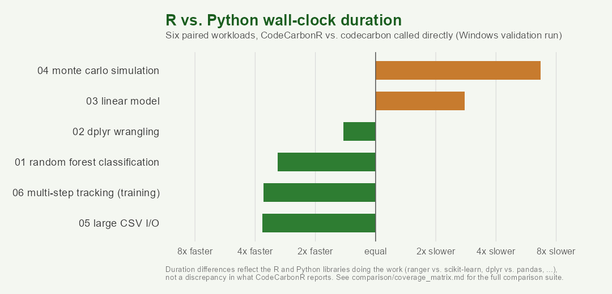

Only 1.9% of papers published in the journal Environmental Data Science report the carbon footprint of their own computational methods. Python has codecarbon and a handful of other tools for closing that gap; R didn’t have one. CodeCarbonR wraps codecarbon via reticulate so R users can track the energy consumption and estimated carbon emissions of their own code in a couple of lines, with the same rigor.

Setup
codecarbon runs in a dedicated conda environment, installed on first use:
This installs Miniconda if needed, creates a conda environment named r-codecarbon, and installs codecarbon into it. Nothing is installed without confirmation.
Usage
result <- with_emissions_tracked(
{
Sys.sleep(2)
sum(1:1e7)
},
country_iso_code = "USA"
)
result
#> Carbon emissions: 4.26e-06 kg CO2e
#> Energy consumed: 1.15e-05 kWh
#> Duration: 2.1 s
#> CPU tracking: estimated (CPU load x TDP)
result$result
#> [1] 50000005000000country_iso_code is required, since codecarbon silently falls back to a world-average carbon intensity if it’s left unset. Call list_carbon_tracker_countries() for the supported codes.
For longer-running or multi-step tracking, use carbon_tracker() directly:
tracker <- carbon_tracker(country_iso_code = "USA")
tracker$start()
# ... code to measure ...
tracker$stop()CPU tracking accuracy
codecarbon measures CPU power directly via RAPL on Linux (when readable without root) and via Intel Power Gadget on Windows and Intel Macs. Power Gadget was discontinued by Intel in December 2023 and is no longer downloadable, so on most current Windows machines codecarbon falls back to an estimate based on CPU load and the CPU’s rated TDP rather than a real measurement. carbon_emissions objects report which mode was actually used via cpu_tracking, so this is visible at a glance rather than silently assumed.
Learn more
The quickstart vignette is a five-minute walkthrough covering setup, tracking a block of code, and reading the result. See comparison/coverage_matrix.md in the repository for what’s been validated against codecarbon directly, on which platforms.